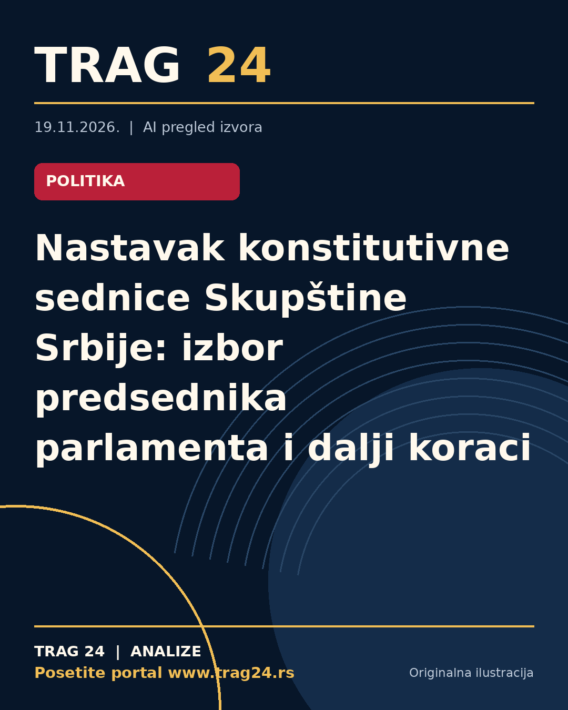

Nastavak konstitutivne sednice Skupštine Srbije: izbor predsednika parlamenta i dalji koraci

ŠTA SE DOGODILO
Skupština Srbije nastavila je konstitutivnu sednicu novog saziva s fokusom na izbor predsednika parlamenta. Kandidate za ovu funkciju predložile su dve glavne poslaničke grupe: Studentska lista kandidovala je docenta Aleksandra Čupića, dok je grupa „Aleksandar Vučić – Srbija pobeđuje“ predložila profesor Stojana Radenovića, koji kao najstariji poslanik predsedava sednicom.
HRONOLOGIJA
Konstitutivna sednica počela je prethodnog utorka potvrđivanjem mandata svih 250 poslanika i formiranjem poslaničkih grupa. Tokom dvodnevne rasprave, dugotrajno je govorio bivši predsednik Srbije Aleksandar Vučić, uglavnom o temama van dnevnog reda. Sednica je nakon toga prekinuta i nastavak je zakazan za naredni dan u 10 časova. Poslanici različitih grupa su najavili dalju dinamiku i planove za događaj.
ŠTA NAVODE IZVORI
Poslanička grupa Studentske liste istakla je kandidaturu svog člana Čupića za predsednika Skupštine, dok je sa druge strane grupa „Aleksandar Vučić – Srbija pobeđuje“ podržala Radenovića. Izvor Danas navodi da su poslanici Studentske liste nameravali da odustanu od daljih govora kako bi ubrzali izbor predsednika. Izvor Novosti dodaje da je u toku sednica na dnevnom redu i izbor potpredsednika, generalnog sekretara i radnih tela Skupštine, te da je formiran rok od 90 dana za formiranje nove Vlade. Takođe se navodi da su poslanici nacionalnih manjina dali podršku kandidatu Studentske liste i traže izmenu poslovnika za formiranje manjinskog poslaničkog kluba.
ŠTA JE POTVRĐENO
Potvrđeno je da se nastavlja konstitutivna sednica sa izborom predsednika parlamenta kao glavnim pitanjem. Dva kandidata zvanično su predložena – Aleksandar Čupić i Stojan Radenović. Takođe je potvrđeno da je predsednik skupštinske sednice trenutno najstariji poslanik Radenović i da su formirane poslaničke grupe. Raspoloženje i najave govore o nameri prethodno najduže rasprave i planu ubrzavanja procesa u nastavku.
ŠTA NIJE POTVRĐENO
Nema potvrde o ishodu izbora predsednika skupštine, odnosno ko će biti izabrani u toj funkciji. Takođe ostaje nepoznato kada će biti formirana nova Vlada Srbije i da li će doći do eventualnih promena u poslovniku na osnovu zahteva manjinskih poslanika. Nije potvrđeno ni da li će rasprava oko drugih tačaka dnevnog reda biti završena na sledećem sastanku.
ŠTA OSTАJE OTVORENO: Ostaće da se prati nastavak sednice i konačan izbor predsednika parlamenta. Takođe ostaje neizvesno da li će i kada biti usvojen zahtev poslanika nacionalnih manjina za izmene poslovnika Skupštine. Važno je pratiti dalji razvoj događaja oko formiranja Vlade u periodu od 90 dana od konstituisanja. Takođe je otvoreno pitanje da li će rasprava o drugim funkcijama u Skupštini biti okončana u dogledno vreme.
Izvori
- https://www.danas.rs/vesti/politika/nastavak-konstitutivne-sednice-skupstine-srbije-u-10-casova-na-dnevnom-redu-i-dalje-izbor-predsednika-parlamenta/
- https://www.novosti.rs/vesti/politika/1672599/danas-nastavak-konstitutivne-sednice-rasprava-kandidatima-predsednika-skupstine
Ova analiza je pripremljena uz pomoć veštačke inteligencije na osnovu javno dostupnih izvora. Navodi izvora nisu nužno nezavisno potvrđeni.